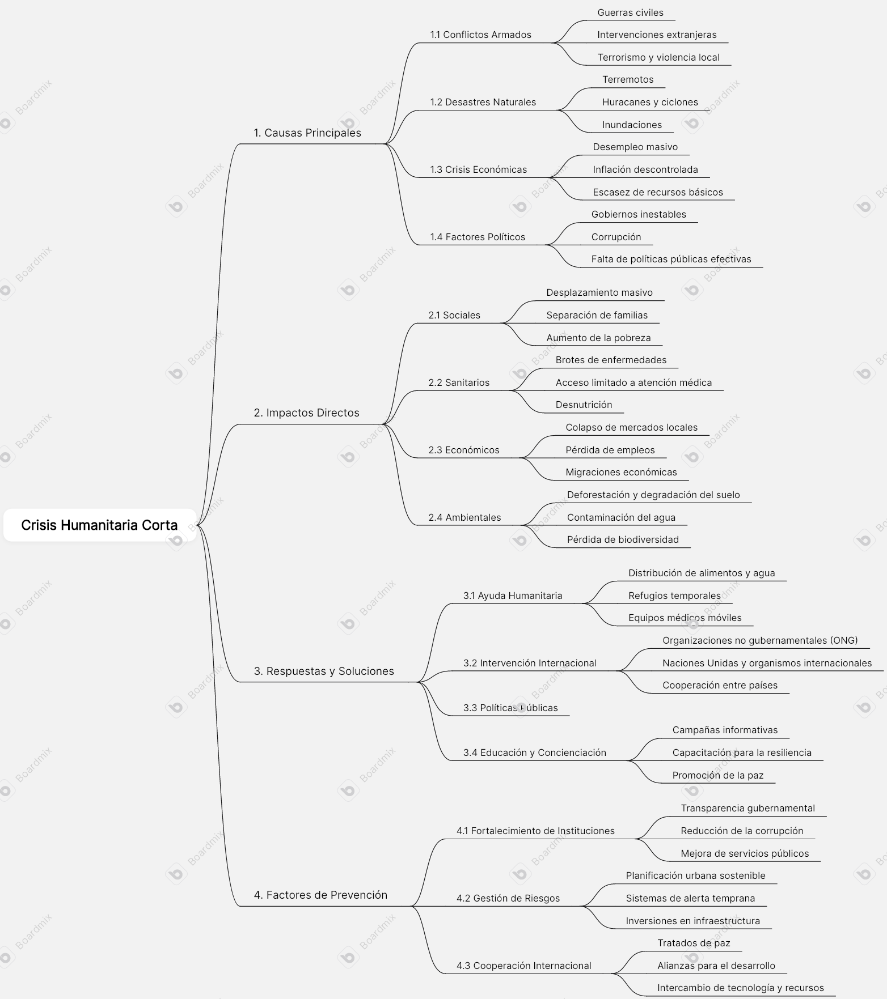

Descripción
En este apartado se presenta un mapa mental que resume los aspectos más relevantes de una crisis humanitaria, incluyendo sus causas, consecuencias, actores involucrados y medidas de atención. Puedes modificar esta descripción según tu análisis o enfoque.
Imagen del Mapa Mental
